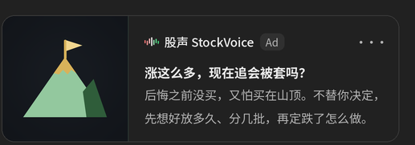

1× ChatGPT 深色卡（V5 文案不变）＋ V6 110px ＋ V5 旧图对照。广告主「股声 StockVoice」为占位。
| G01 涨多了还能不能买 个股层｜使用者在问大涨的美股还能不能追：怕被套、买在山顶，后悔之前没买，问要不要分批或等回调。 | A 处境 · 山顶旗 · 沿用 SV-09（V5 G01 B → A；旗橙→金）  | B 股声能做的事 · 录音带 · 沿用 SV-21（卷轴金→蓝粉） 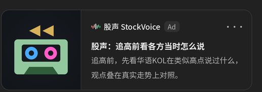  |
|---|---|---|
| G02 跌了／被套要不要卖 个股层｜使用者持股下跌被套，讲成本价和亏了多少，问要认赔、cut loss、攤平还是撑住，睡不好又不甘心。 | A 处境 · 雨伞 · 沿用 SV-33（雨线蓝→灰） 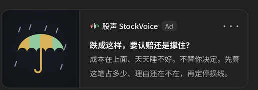  | B 股声能做的事 · 天平 · 沿用 SV-05（盘改金、盘内改放珠子） 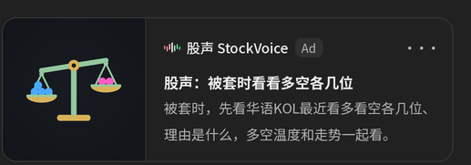 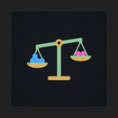  |
| G03 跌下来要不要加码 个股层｜使用者看好的股票或大盘回调，手上有现金，问要不要趁跌加码、捡便宜还是抢反弹，怕越加越跌。 | A 处境 · 购物车 · 新画 new 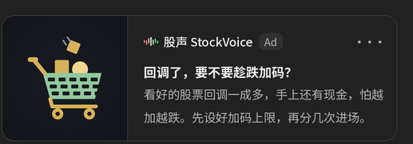 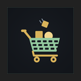  | B 股声能做的事 · 温度计 · 沿用 SV-17（液柱三段→蓝粉两段） 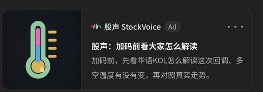 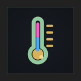  |
| G04 赚了要不要落袋 个股层｜使用者美股赚了一倍以上、仓位太重，问要不要落袋、卖一半锁住获利，或 stop loss 设哪里。 | A 处境 · 麦束 · 新画 new 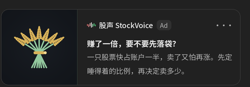  | B 股声能做的事 · 投票牌 · 新画 new 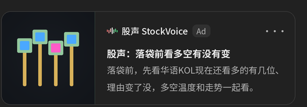  |
| G05 组合怎么配／买什么 个股层｜使用者在配美股组合：第一次买或每个月定投，问 ETF 还是个股、比例怎么配，没时间研究。 | A 处境 · 蛋篮 · 新画 new 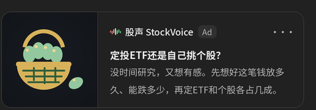 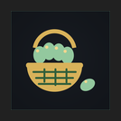  | B 股声能做的事 · 放大镜 · 新画 new（不沿用 SV-02 压纸版） 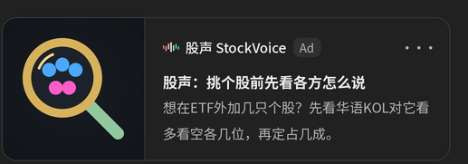  |
| G06 大家都在聊的那只 个股层｜使用者的群里、同事都在聊某只热门美股，怕错过，问现在上车会不会太晚、投多少、能不能 all in。 | A 处境 · 列车 · 沿用 SV-10（V5 G01 A → G06 A） 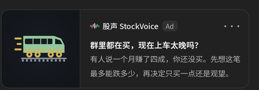  | B 股声能做的事 · 火苗 · 沿用 SV-25（不变；R-B 例外） 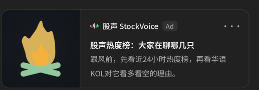  |
| G07 挑一只对冲／求稳的股 个股层｜AI 列出能源、医药、银行等对冲或防御股后，使用者挑其中一只（如 XOM、LLY、JPM）问哪只稳、适不适合。 | A 处境 · 船锚 · 新画 new 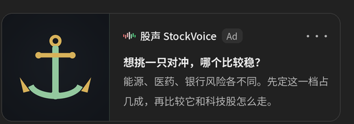  | B 股声能做的事 · 跷跷板 · 沿用 SV-03（V5 G12 A → G07 B；蓝 5→3） 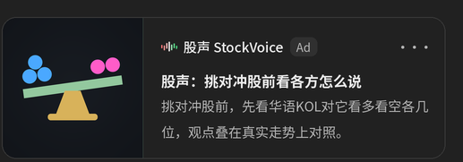  |
| G08 财报前后要不要进名单里那只 个股层｜AI 提到财报时程并列出 JPM、LLY、MU 等后，使用者挑一只问财报前进场还是等财报后、会不会大涨。 | A 处境 · 桌历 · 新画 new 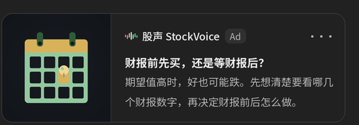  | B 股声能做的事 · 麦克风 · 沿用 SV-01（底座改金） 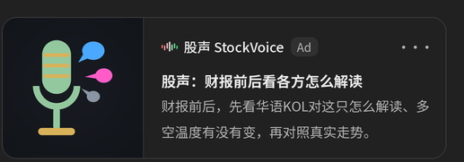  |
| G09 板块重挫后问为什么跌 个股层｜AI 提到某板块整体重挫后，使用者问为什么跌、是不是周期见顶、会不会拖累 MU 这类同业，还没持有、在想是不是机会。 | A 处境 · 骨牌 · 新画 new 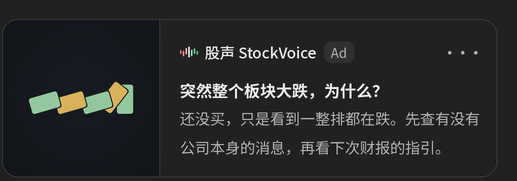 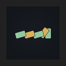  | B 股声能做的事 · 指南针 · 沿用 SV-36（不变） 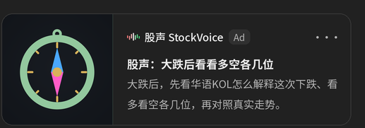 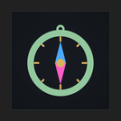  |
| G10 大盘急跌是不是要崩／过热 非个股层｜AI 刚校正完大跌或过热的事实后，使用者问大盘是不是要崩、是不是过热、要不要先走、是不是只有自己这么慌（多半持有 SPY、QQQ）。 | A 处境 · 积木塔 · 新画 new 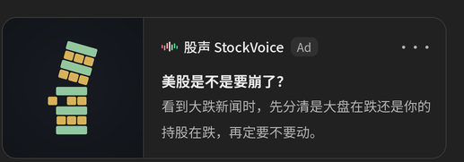  | B 股声能做的事 · 投票箱 · 沿用 SV-20（不变） 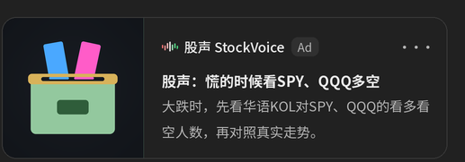  |
| G11 AI 主题是不是泡沫 非个股层｜AI 刚列出 AI 泡沫论的正反事实后，使用者问主流怎么看、主题还能不能追。 | A 处境 · 气球 · 新画 new 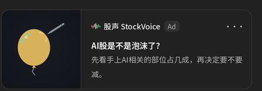 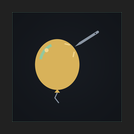  | B 股声能做的事 · 芯片 · 新画 new 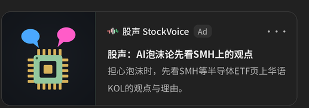 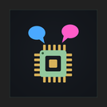  |
| G12 利率高要不要降股票比重 非个股层｜AI 刚说明利率创高点对股市的影响后，使用者在想手上的 QQQ、SPY 要不要减，问利率还会升还是到顶。 | A 处境 · 秤砣弹簧 · 新画 new 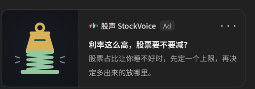  | B 股声能做的事 · 风向袋 · 沿用 SV-18（袋尾加蓝粉飘带） 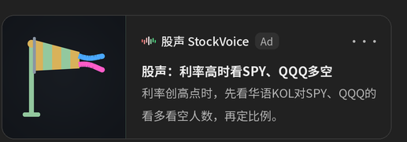 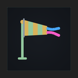  |